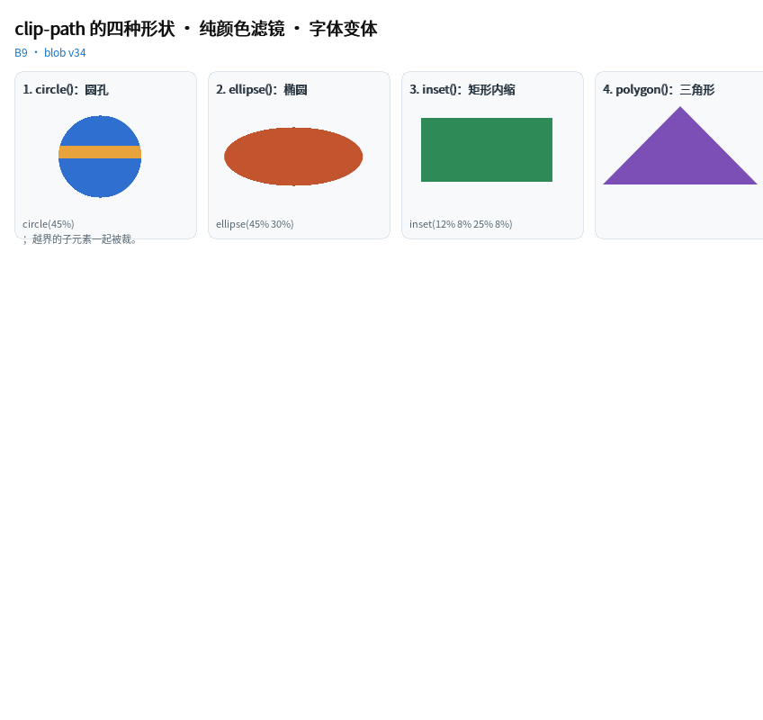

视觉与动效
clip-path 的四种形状 · 纯颜色滤镜 · 字体变体
这一章（B9，blob v34）补的都是"真实页面天天写、写了以前会报错"的东西：

完整程序：example/36_clip_filter/
.avatar { clip-path: circle(45%); }
.badge { clip-path: polygon(50% 0, 100% 78%, 0 78%); } /* 三角标 */
.frame { clip-path: inset(6% 8%); } /* 内缩一圈 */
.oval { clip-path: ellipse(45% 30%); }
.dim { filter: grayscale(100%); } /* 只是颜色 → 不进离屏图层 */
.faded { filter: brightness(0.85) contrast(1.1); }
.big { font-variant-caps: small-caps; }
.nums { font-variant-numeric: tabular-nums; }
.para { text-align: justify; white-space: normal; }
.squashed { border-radius: 40px / 12px; } /* 椭圆圆角 */
.pop { box-shadow: 0 0 0 8px #BFD7EF; } /* spread */
它们各自的代价差别很大，所以下面按"便宜 → 贵"排。
1. inset()：最便宜，直接与裁剪矩形求交
clip-path: inset(top right bottom left) 是纯矩形 —— 它等价于"把自己裁到那个
内缩矩形里"，所以实现上什么都没多做：直接把内缩矩形与当前裁剪求交，然后照原样画。
- 两个后端都精确（不是近似，也没有抗锯齿带的差异）；
- 零额外内存、零额外绘制遍数；
- 百分比相对边框盒的宽/高（与 CSS 一致：左右按宽、上下按高）。
.card { clip-path: inset(12% 8% 25% 8%); }
值可以是 1/2/3/4 个，展开规则与 margin 完全一样。
2. circle() / ellipse()：解析遮罩（一条 SDF，不用缓冲）
圆与椭圆在片元里就是一个距离函数：
d = (length((p - center) / vec2(rx, ry)) - 1.0) * min(rx, ry);
coverage = 1 - smoothstep(-0.5, 0.5, d);
- GPU：遮罩参数跟着顶点走（
a_mask = (cx, cy, rx, ry)），一次glDrawArrays里 每个图元各自带自己的遮罩，所以不进离屏图层、不多 draw call； - CPU：
mask_cov_at()逐像素算同一个公式；填充分支还有一条"整行跨度"快路径 （mask_row_span），中间那一段走 SIMD 行填充。
.avatar { clip-path: circle(45%); } /* 半径 = 最远角距离的 45% */
.oval { clip-path: ellipse(45% 30%); } /* rx / ry 分开 */
半径用百分比而不是 px 是有意的：
0% → 100%的动画在任何尺寸的盒子上都成立 （px 会"提前跑完"）。见例程31_filter的揭示动画。
circle() 与 ellipse() 都裁整棵子树（等价 CSS 语义）：例程里那根橙色横条
故意画出父盒之外，一样被裁掉。
3. polygon()：解析覆盖率（零图层、零额外内存）
- 构建期把顶点存进 doc 的顶点池（同样形状只存一份，一排同款徽标共用一个），
样式里只留
clip_pts下标 +clip_pt_n； - 绘制时把顶点换算成绝对坐标交给后端（
ql_draw2d_set_mask_polygon）， 覆盖率 = 奇偶内点判定 + 到最近边的距离，再走 ±0.5px 的 smoothstep 抗锯齿； - CPU 逐像素算（
qlcanvas.c的poly_cov），GPU 在片元着色器里用 uniform 顶点表算（u_pn/u_p[N]），两边逐字对应。
所以边的清晰度与元素尺寸无关，也没有 64×64 蒙版图 + 离屏图层那种开销： 一张 800px 宽的三角形和 80px 宽的三角形，边上都只有 1px 左右的过渡带。
约束（构建期报错，不做静默降级）：
| 写法 | 结果 |
|---|---|
polygon(0 0, 100% 0, 50% 100%) |
✅ 至少 3 个顶点，任意多个（上限 QL_CFG_UI_CLIP_PTS_MAX） |
polygon(... , evenodd) |
❌ 本库形状只有一层，evenodd 与非零环绕结果相同 —— 报错以免你以为生效了 |
path('M0 0 L…') / url(#id) |
❌ 要 SVG 路径解析器，明确不支持 |
inset(… round 4px) |
❌ 圆角矩形裁剪要另一套扫线；建议改用 border-radius + overflow: hidden |
circle(50% at 30% 30%) |
❌ 圆心恒在元素中心 |
4. 纯颜色 filter：不进离屏图层
在 B9 之前，任何 filter 都会让这一层走离屏图层（先把子树合成一张 RGBA，再整体处理）。
但 brightness() / contrast() / saturate() / grayscale() / sepia() /
invert() / hue-rotate() / opacity() 这八个只改颜色，逐图元做和先合成再做
在绝大多数用法里没有区别 —— 而它们的代价差一整块缓冲 + 两遍绘制。
所以现在构建期把这一串函数折成一个 3×4 颜色矩阵（16.16 定点，链式相乘）：
- CPU：挂到
QLCanvas上，put_px/ 行填充 /blit_image三个入口过一遍矩阵 （开启时绕开 SIMD 行填充，因为那条路不经过逐像素）； - GPU：作为 uniform 上传（
u_cm[3]+u_cm_on），片元里在唯一出口处施加 —— 这样不会重演当年"圆遮罩漏了某个 return"的老坑。
QLQ 侧只是判断"这一串 op 里有没有 blur / drop-shadow"：
if (s->filter_n > 0) {
int32_t m[12], apm = 1000;
if (!filter_build_cm(s, m, &apm))
return 1; /* 含 blur / drop-shadow → 老老实实走图层 */
}
语义差别（写进文档，不藏着）：CSS 的
filter作用于"元素合成后的结果"， 逐图元施加时，子树内部互相重叠的地方会略有不同。filter: brightness(.9)这类用法看不出区别；要严格等价就加一个blur()（或blur(0.001px)）把它推回图层。
opacity() 在这里被折成"乘进 d2d->alpha"，所以它也不需要图层。
5. 字体变体：small-caps / tabular-nums
这两个都靠 OpenType 特性（smcp / tnum），所以需要 HarfBuzz：
.title { font-variant-caps: small-caps; }
.nums { font-variant-numeric: tabular-nums; }
- 有 HarfBuzz → 给
hb_shape()多挂两条hb_feature_t； - 没有 HarfBuzz → 构建期报错（
QL_FEAT_CSS_TEXT_SHAPE=0时）。 不做"看起来生效了其实没变"的静默降级 —— 那比报错更难查。
样式里只占一个字节（variant_flags 位图），所以 MCU 上开关它没有成本。
6. 顺手补上的几件小事
| 属性 | 行为 | 说明 |
|---|---|---|
text-align: justify |
除最后一行外，把剩余空间平摊到字形间隙 | 只有一行时等于左对齐；text-overflow: ellipsis 的行不拉伸 |
border-radius: a / b |
水平半径 a、垂直半径 b |
绘制侧取两者平均作为等价单半径（精确椭圆角要改两个 SDF，见文档 §5） |
box-shadow: x y blur spread color |
第四个长度 = 扩散半径 | 阴影轮廓整体外扩/内缩，与浏览器一致（spread 作用于"形状"，不是模糊） |
font: italic bold 20px/28px monospace |
简写 | 支持 style / variant / weight / size / line-height / family |
word-wrap: break-word |
= overflow-wrap 的老名字 |
|
:empty |
没有子元素、也没有非空文本 | 只有空白的元素算 empty（它不产生盒子），与 CSS 一致 |
revert |
与 unset 同路径 |
回滚到"父级继承值 / 初始值" |
::first-line / ::first-letter |
构建期报错 | 哪几个字落在第一行要等布局才知道，而本库样式是构建期编译成静态表的；请用 <span class=...> 手工包住那几个字 |
7. 三个"顺手抓到"的真 bug
这一轮改动同时暴露了三处老问题（都已修，并被 test_b9 / 全量用例守住）：
- GL 片元的零半径遮罩：
min(rx, ry) == 0时距离被乘成 0，smoothstep得 0.5， 整块变半透明 —— golden 的clip用例 CPU/GPU 差 47%。（现在半径 ≤ 0 明确判为全裁。） - column flex 里的折行文本高度：折行基准用的是容器宽度而不是子项自己的
width，于是"窄列 + 长段落"被算成 1 行（高度 20px），而绘制按 440px 折成 2 行， 第二行压到下一个元素上。 - 行内子节点的测量高度：column 布局里把
inline子节点的高度逐个相加了 （<span>a</span><span>b</span>得 84px 而不是 23px）。现在按"行内一行取最大值"算。
8. 裁剪开关与 MCU
| 能力 | 开关 | 关掉之后 |
|---|---|---|
clip-path 四种形状 |
QL_FEAT_CSS_FILTER_LAYER（polygon 依赖图层；circle/ellipse/inset 只依赖 SDF 与裁剪） |
写 clip-path 构建期报错 |
纯颜色 filter |
同上 | 同上 |
small-caps / tabular-nums |
QL_FEAT_CSS_TEXT_SHAPE |
构建期报错（没有整形就没有特性表） |
用 qltext check --platform mcu 可以在构建前知道这份界面在 MCU 上会被裁掉哪些东西
（见《QLUI API 手册》的 qltext 一节）。